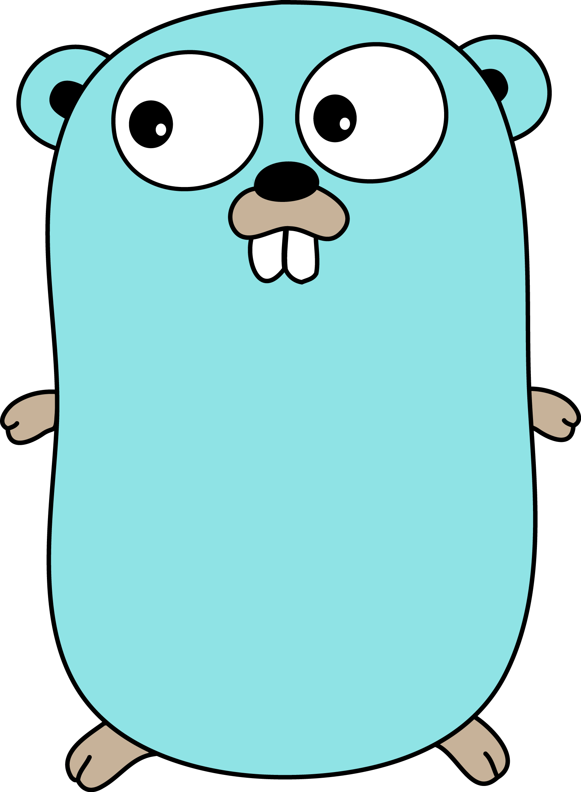
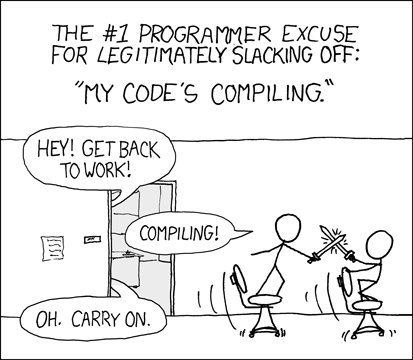

Présentation Golang

Créé par
Pierre Zemb
Les slides sont disponibles sur slides.pierrezemb.fr
+Me
- Etudiant en Cycle informatique et Réseaux à l'ISEN Brest
- Jeune stagiaire en alternance au Crédit Mutuel Arkéa
Les origines de Go
Langage porté par :
- Ken Thompson
- Rob Pike
- Robert Griesemer
Les problématiques du développeur logiciel
- langages interprétés != performance
- langages compilés != simplicité de la syntaxe

Les problématiques du développeur logiciel
Le développement logiciel doit et devrait être simple
- Simple à lire/écrire
- Cohérent
- Robuste
- Intuitif
Mais le Go c'est quoi ?
- Langage compilé et typé
- Inspiré du C/C++
- Possède un Garbage Collector
- Syntaxe claire
- Open-Source
- Bibliothèque standard très riche
- En version 1.2 depuis Décembre 2013
Fonctionnalités clés
- Compilation extrèmement rapide
- Faible empreinte mémoire
- Pensé pour de la concurrence !
- Moins de lignes de code en moins de temps
- Multi-plateformes
Go = Easy like Python + Efficient like C++ + Fast compilation
Qui utilise Go ?
- Couchbase (interface de requêtage pour N1QL)
- CloudFlare (Service de DNS distribué)
- SoundCloud (douzaines de features écrites en Go)
- Iron.io (Remplacement du Ruby/Groovy par du Go)
- Google (dl.google.com et une partie de Youtube)
- Docker (automatisation des containers Linux)
Petit tour d'horizon du langage

Hello World
package main
import "fmt"
func main() {
fmt.Println("Hello, 世界")
}
Hello, 世界
To run it
go build hello.go
Or
go run hello.go
Functions
package main
import "fmt"
func add(x int, y int) int {
return x + y
}
func main() {
fmt.Println(add(42, 13))
}
55
Functions
package main
import "fmt"
func swap(x, y string) (string, string) {
return y, x
}
func main() {
a, b := swap("hello", "world")
fmt.Println(a, b)
}
world hello
Functions
package main
import "fmt"
func split(sum int) (x, y int) {
x = sum * 4 / 9
y = sum - x
return
}
func main() {
fmt.Println(split(17))
}
7 10
Variables
package main
import "fmt"
const Pi = 3.14
func main() {
var i, j int = 1, 2
k := 3
c, python, java := true, false, "no!"
fmt.Println(i, j, k, c, python, java, Pi)
}
1 2 3 true false no! 3.14
Types
- string
- int, int8, int16, int32, int64
- uint, uint8, uint16, uint32, uint64, uintptr
- Byte
- rune(alias for int32,represents a Unicode code point)
- float32, float64
- complex64 complex128
Type conversions
i := 42
f := float64(i)
u := uint(f)
Structures
package main
import "fmt"
type Vertex struct {
X int
Y int
}
func main() {
p := Vertex{1, 2}
q := &p
q.X = 1e9
fmt.Println(p)
}
{1000000000 2}
Mais il y a aussi :
- Des tableaux
- statiques
- dynamiques (slices)
- Des maps
- Des méthodes pour structures
- Des pointeurs
- ...
Boucle
package main
import "fmt"
func main() {
sum := 0
for i := 0; i < 10; i++ {
sum += i
}
fmt.Println(sum)
}
45
While?
package main
import "fmt"
func main() {
sum := 1
for sum < 1000 {
sum += sum
}
fmt.Println(sum)
}
1024
Boucle infinie
package main
func main() {
for {
}
}
Condition
package main
import (
"fmt"
"math"
)
func sqrt(x float64) string {
if x < 0 {
return sqrt(-x) + "i"
}
return fmt.Sprint(math.Sqrt(x))
}
func main() {
fmt.Println(sqrt(2), sqrt(-4))
}
1.4142135623730951 2i
Switch
package main
import (
"fmt"
"runtime"
)
func main() {
fmt.Print("Go runs on ")
switch os := runtime.GOOS; os {
case "darwin":
fmt.Println("OS X.")
case "linux":
fmt.Println("Linux.")
default:
// freebsd, openbsd, plan9, windows...
fmt.Printf("%s.", os)
}
}
Go runs on Linux.
Goroutines
package main
import (
"fmt"
"time"
)
func say(s string) {
for i := 0; i < 3; i++ {
time.Sleep(100 * time.Millisecond)
fmt.Println(s)
}
}
func main() {
go say("world")
say("hello")
}
hello
world
hello
world
hello
Exemple: serveur Web
package main
import (
"fmt"
"net/http"
)
type Hello struct{}
func (h Hello) ServeHTTP(
w http.ResponseWriter,
r *http.Request) {
fmt.Fprint(w, "Hello!")
}
func main() {
var h Hello
http.ListenAndServe("localhost:4000", h)
}